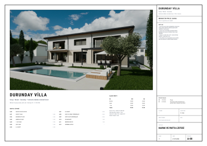
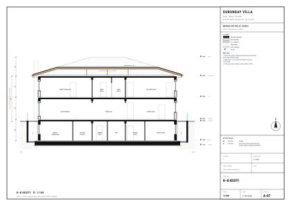
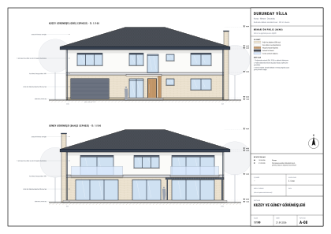
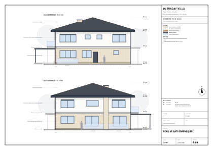
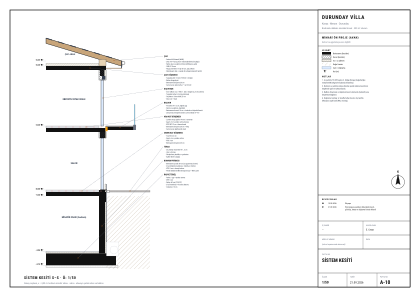
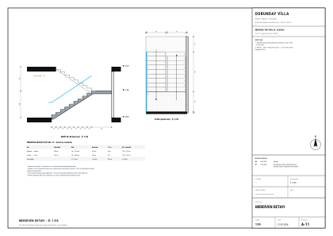
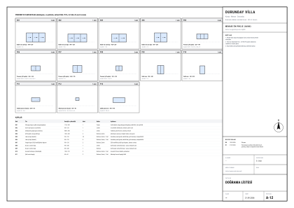

Çizimler
A3 yatay, antetli paftalar: vaziyet 1/200, planlar-kesitler-görünüşler 1/100, sistem kesiti ve merdiven 1/50. Ölçüler cm, kotlar m. Planlarda aks sistemi, üç sıralı dış ölçü zinciri, iç ölçüler, kotlar, kesit işaretleri, kapı/pencere kodları ve mobilya yerleşimi vardır. Her pafta SVG’dir; büyütmek için üzerine tıklayın. Tüm set tek PDF olarak Dosyalar sayfasında; AutoCAD için katmanlı DWG / DXF seti de orada.








